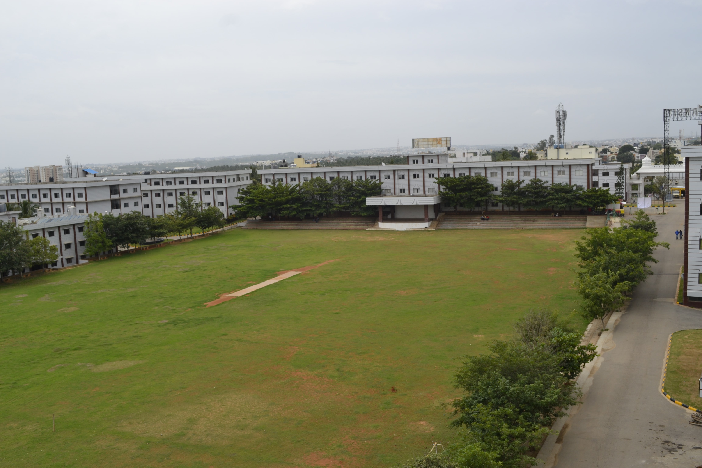

Main Block

Ground

Building RNSIT into a world-class institution.
To impart quality education in Engineering, Technology and Management with a difference, Enabling Students to Excel in their Career by